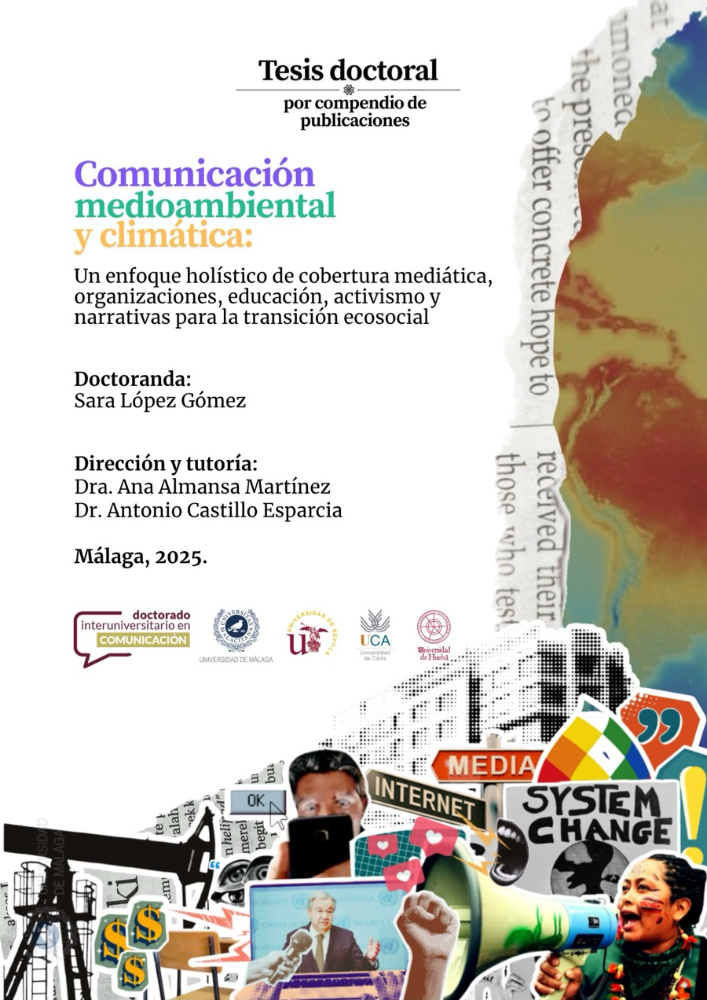

Esta tesis doctoral se inscribe en el campo de la comunicación medioambiental y climática y propone la noción de comunicación para la transición ecosocial como un enfoque integrador que articula ámbitos tradicionalmente fragmentados. La investigación se estructura en torno a cinco dimensiones interrelacionadas: cubrimiento mediático, educomunicación, comunicación organizacional, activismo ciudadano y comunicación para la transición ecosocial. A través de siete publicaciones, la tesis examina casos diversos: la influencia de lobbies y think tanks en la cobertura mediática de la COP25 en prensa digital estadounidense; la sección climática klimat-live del periódico sueco Aftonbladet; experiencias de educomunicación popular en defensa de la Amazonía colombiana; la relación entre acceso a la información, activismo y alfabetización climática en el estudiantado universitario español; la comunicación corporativa mediante branded podcasts medioambientales; la producción académica sobre activismo y cambio climático; y el papel de los podcasts ecosociales en inglés y español como espacios de imaginación cívica y transformación cultural. Los resultados muestran que las fronteras entre los distintos ámbitos son cada vez más difusas. La comunicación mediática informa, visibiliza y enmarca los problemas; la educomunicación traduce el conocimiento en aprendizaje colectivo; la comunicación organizacional legitima las acciones y contribuye a la responsabilidad social y la rendición de cuentas; el activismo moviliza y reinterpreta los discursos; y la comunicación para la transición ecosocial integra y resignifica estas prácticas hacia un cambio estructural. Se concluye que el campo debe abordarse desde una mirada más holística e interdisciplinaria, superando el énfasis meramente informativo sobre el cambio climático, y desarrollarse desde la óptica de la transición, en diálogo con la ecología política, la educación, los movimientos sociales y la economía crítica, para avanzar hacia una comunicación transformadora comprometida con la sostenibilidad de la vida y los procesos de cambio cultural, político y civilizatorio.
Tesis doctoral · 2026
Comunicación medioambiental y climática: Un enfoque holístico de cobertura mediática, organizaciones, educación, activismo y narrativas para la transición ecosocial
Tesis doctoral, Universidad de Málaga
